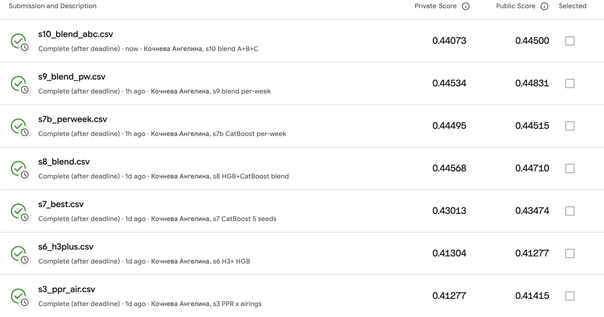
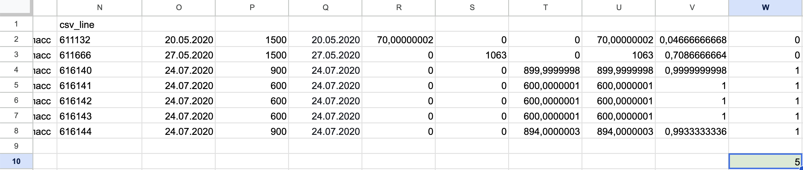
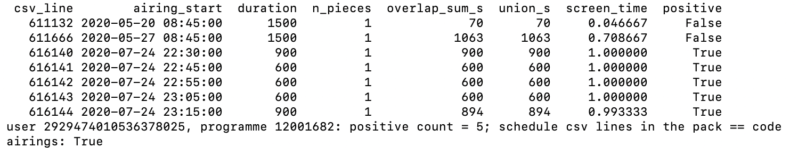
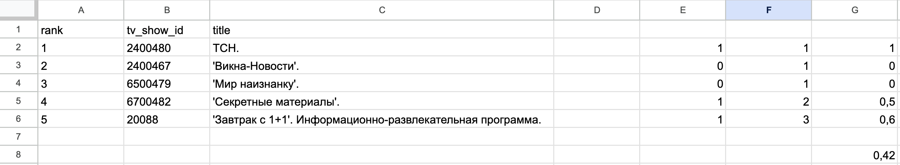

Repository: https://github.com/kocnevaangelina2000-wq/sweettv-tv-recommender-exam · Final submission: submissions/s8_blend.csv · Kaggle private MAP@5 0.44568 (public 0.44710)
We build a Top-5 TV-programme recommender for the 1,260 test users of the Kaggle competition sweet.tv – TV program recommender. The target counts a programme's airings that a user watched for at least 80% of their duration, and keeps the top five programmes by that count [6].
We join 5.8 M log rows to the schedules by channel and time overlap; screen time is the union of a user's overlapping views divided by the airing duration. Every parameter is selected on one declared fold (A: weeks 11–15 → 16–20) and reported on another (B: 11–20 → 21–30). We compare popularity, viewing history, implicit ALS [1], personalised PageRank [2] and content TF-IDF [3], each also weighted by airing count, against rank fusion and learned re-rankers: Poisson gradient boosting and CatBoost YetiRank [4], with hour-of-week "exposure" features.
The best single method reaches MAP@5 0.326 on fold B and 0.413 on Kaggle private. The graded file, a rank fusion of the two re-rankers fit on both folds stacked, scores 0.44568 private. Fold B ranks the strongest models differently from the leaderboard, which is the main limitation of the validation design. Of twelve files written, eight were submitted. Two of them (s9, s10) were specified after Kaggle scores were known, and the final file is the best private score, per the instructor's rule.
The task is to predict, for each of 1,260 sweet.tv users, the five programmes with the most airings watched to at least 80% of their length in weeks 31–42 of 2020 [6]. We are given the viewing log of weeks 11–30 and all schedules. The metric is MAP@5, where each user's AP is divided by min(5, |truth|), as defined in the course MAP@K slide [7].
Three properties shape the work:
Contributions: a verified join and labelling pipeline with every data trap logged; a fold protocol that separates selection from reporting; a comparison of single and hybrid methods on it; and a record of twelve files written and eight submitted that states which choices used the leaderboard.
Hu et al. [1] model implicit counts as confidence weights on binary preferences (ALS), with TV viewing as their case study. Topic-sensitive PageRank [2] biases a random walk towards a restart set; with one user as the restart set it is the personalised PageRank (PPR) we run on the user–programme graph. Content-based TF-IDF profiles follow Lops et al. [3]. YetiRank [4] is the pairwise ranking loss behind CatBoost's YetiRank objective. Cremonesi et al. [5] show that algorithm rankings depend on the metric and that popular items dominate top-N measurements, so we tune and report a rank metric, always next to a popularity baseline and on the test-user subset as well as the full cohort.
Data accounting (log, schedule, join and test-user counts) is in Table A0, Appendix A.
Join. A view and an airing match if vsetv_id = channel_id and the intervals [start, stop) and [start, start + duration) intersect. A per-channel searchsorted avoids a Cartesian merge, and it reproduced a brute-force merge on 9 channels exactly (47,116 pairs).
Screen time and the 0.8 rule. For each (user, airing), all of the user's overlap pieces are merged, and screen time = |union| / duration, clipped to 1. An airing is positive at ≥ 0.8. A union is needed because 2,617 users have overlapping views on one channel, and summing their pieces would make 4,217 extra interactions positive. A fraction is needed because the cut sits above most of the distribution (screen time p50 0.195, p75 0.657, p90 1.0; 20.3% of (user, airing) rows reach 0.8). Airing durations range from 60 s to 86,400 s (labelled airings up to 32,700 s), so a fraction rather than absolute seconds is needed, and the Kaggle label is itself defined as a fraction [6]. The truth is the top five programmes by positive airings in the target window, with ties broken by total union seconds and then by id. The union matched a naive merge on 38,889 groups, and four interactions were recomputed from the raw rows in the session (RESULTS, hand-check rows).
id = 0 is unlabelled airtime. It is never recommended and never in the truth, and its seconds feed only channel-share and exposure features.
The data traps are listed in Appendix A: file and column names in the Kaggle Data tab's file descriptions that differ from the files it actually serves, ids beyond int64, date formats, DST, multi-device overlaps, schedule cut points, unscheduled channels, truth ties and airing skew.
Splits are declared as (schedule file, ISO-week range) windows of the airing start:
The cohort is the users with ≥ 1 positive in the target window; MAP@5 is reported on it and on its test-user subset.
Cohorts: A 4,574 = 4,409 warm + 165 cold (test subset 1,212); B 4,643 = 4,540 + 103 (test subset 1,238, plus 22 test users without truth = 1,260). On B, 0 truth slots fall outside the pool.
The pool is the set of labelled programmes airing in the target window. The future schedule is used only to know what airs when, and already-watched programmes may be recommended.
Every parameter and model choice up to s8 is the argmax of fold-A cohort MAP@5; re-rankers use 5-fold grouped-by-user out-of-fold scores. Fold B reports each choice, with the model fit on A.
Exactly five ids. Each method ranks pool ids by score (ties broken by global popularity) and truncates the list at 5. Short lists are topped up, without duplicates, from a shared fallback: pool programmes ranked by train positives × the user's watch-time share on the channels where the programme airs. Users without positives (4 test users) receive the fallback alone. An assertion checks 5 unique pool ids, and every file is validated against the template.
implicit, 150-point grid over confidence (count, log1p or BM25) × factors × regularisation × α.HistGradientBoostingRegressor, Poisson loss, lr 0.01 (lr 0.1 diverged; BUGLOG B28).Before any step-5 fold-B result was seen, we decided that final re-rankers are fit on A and B stacked, with label = positives per target week (5, 10 and 12 weeks in A, B and final).
Settings selected on fold A: PPR × air α 0.5 (21 iterations); ALS × air count, 16 factors, reg 0.01, α 1; H2 all weights 1, k 10; HGB Poisson, lr 0.01, ≤ 1000 iterations with early stopping; CatBoost YetiRank, lr 0.03, depth 8, 500 iterations; s8 blend w(HGB, CB) = (0.5, 0.5), k = 5.
Seeds are 42, and seed bagging uses 42–46; same-seed CatBoost fits are identical.
Runtimes on fold B (4,643 users, Apple M3 Max, one BLAS thread): history 0.06 s, ALS × air 0.9 s, CBF × air 2.9 s, PPR × air 24 s, H3+ 87 s, CatBoost × 5 seeds 125 s, and the s8 script with its fold-A grid 843 s.
Environment: Python 3.9.6 with numpy 2.0.2, scipy 1.13.1, pandas 2.2.3, pyarrow 17.0.0, scikit-learn 1.5.2, implicit 0.7.3 and catboost 1.2.8.
Single methods (Appendix B), MAP@5 on fold B: popularity 0.2368, history 0.3067, ALS × air 0.2904, CBF × air 0.2987, PPR 0.3194, PPR × air 0.3256 (best; A 0.3411). Airing weighting helps most where the base score ignores frequency: CBF +0.074 on B (base CBF 0.2247), PPR +0.006. The fold-A pick matches the fold-B best-of-grid for every method except ALS × air.
Hybrids and re-rankers (Table C0), B cohort: H1 0.3141, H2 0.3292, H3 0.3431, H3+ 0.3538, CatBoost × 5 (s7) 0.3542, blend (s8) 0.3532; on A the blend is best (0.3783).
Learned re-ranking is the largest step: H3 is +0.0175 over PPR × air on B, and H3+ adds +0.011. After H3+, every fold-A gain is ≤ 0.0025, several reverse on B, and each cell is a single fit. A larger candidate set raised recall by 0.10 but not B MAP@5. In the ablation (Table C2; Δ = ablated − full), only removing exposure costs clearly more than noise (Δ = −0.010 on B).
Kaggle. All eight submissions, with what each changed, are in Appendix D. Private MAP@5 rose from 0.287 (s1 popularity) and 0.413 (s3 PPR × air) to 0.430 (s7) and 0.446 (s8). In the one clean pair, s7 → s7b, only the count features change (to per-week): private rises by +0.0148, while fold B is neutral. Fold B, fit on A only, never exercises the stacked final fit, whose parts differ in window length. s9 → s10 (fold C plus recency features, changed together) lowers private by −0.0046. One plausible reason is that C's train window ends in the gap weeks, but the two changes are confounded. Fold-A OOF orders s3 < s6 < s7 < s8 as Kaggle does; fold B does not.
The users were drawn by stated rules (DESIGN D68–D69) from the 1,260 test users in the fold-B cohort, with seed 42.
The heavy rule and the first light rule were fixed before any list was seen. The first light draw was degenerate: its single truth programme was its single history programme (Friends), so every personalised method scored AP 1.0. After seeing that, we added a second light rule (≥ 3 truth programmes in 21–30; 21 eligible) with its own seed-42 draw. Its result is reported below, and the first draw is in Appendix F.
In the tables, R = re-watch (≥ 1 positive in 11–20), T = in the 21–30 truth, and f = filled by the shared fallback. Each method's fold-B MAP@5 was recomputed in the same run and matches Appendices B–C.
Heavy viewer. Train history (top 6): SpongeBob 103 positives, Fairly OddParents 28, Masha and the Bear 19, Alvinnn!!! 16, Факты (news) 14, Сегодня (news) 13. Truth: SpongeBob, Факты, Сегодня, Fairly OddParents, Alvinnn!!!.
TABLE I. HEAVY VIEWER 3086774348345899441 (ids, schedule titles, categories: Appendix F)
| method | AP | top-5 |
|---|---|---|
| popular. | .35 | ТСН R · Факты RT · SpongeBob RT · Завтрак с 1+1 R · Сегодня RT |
| history | .71 | SpongeBob RT · OddParents RT · Masha R · Alvinnn RT · Факты RT |
| PPR×air | .76 | SpongeBob RT · OddParents RT · Alvinnn RT · Masha R · Факты RT |
| CBF×air | .60 | SpongeBob RT · Alvinnn RT · OddParents RT · Blaze · Penguins R |
| ALS×air | .60 | SpongeBob RT · Alvinnn RT · OddParents RT · ТСН R · Kung Fu Panda R |
| s8 | 1.0 | SpongeBob RT · Alvinnn RT · OddParents RT · Факты RT · Сегодня RT |
Light viewer. Train history: two films, Volga-Volga and SWAT (1 positive each). Truth: Факты, ТСН, Викна-Новости (news), and the series Однажды в Одессе and Мамочки.
TABLE II. LIGHT VIEWER 706288898823145641 (ids, schedule titles, categories: Appendix F)
| method | AP | top-5 |
|---|---|---|
| popular. | .40 | ТСН T · Факты T · SpongeBob · Завтрак с 1+1 · Сегодня |
| history | 0 | Volga-Volga R · SWAT R · Criminal Minds f · CSI f · Hercules f |
| PPR×air | .17 | SWAT R · Volga-Volga R · ТСН T · Факты T · SpongeBob |
| CBF×air | 0 | SWAT R · Volga-Volga R · Цирк · Battle: Los Angeles · Весёлые ребята |
| ALS×air | 0 | Служба розыска детей · Майор и магия · Gumball · Lost · Деньги |
| s8 | .40 | ТСН T · Факты T · SpongeBob · Peppa Pig · Безбашенные |
Heavy viewer. Every method finds SpongeBob. Only s8 has all five truth programmes, including both news programmes, which only popularity also lists.
Light viewer. None of the truth programmes had a positive airing in this user's 11–20 log on this platform; that is the case for 33–35% of all truth items (B29). History and content therefore repeat the two films and miss. PPR reaches the news hubs ТСН and Факты by graph diffusion from those films (PPR's own items, not fallback), and s8 ranks them first. ALS fills all five slots with unfamiliar programmes and scores AP 0. An unfamiliar slot is therefore not evidence of a useful discovery. Content-based can score all 4,488 pool programmes with no train positive (fold B), whereas ALS and PPR can rank only the 1,875 pool programmes that had positives in train. Popularity already does as well as s8 for this user (AP .40).
Validation. Each learned re-ranker beats every single method on both folds (≥ +0.017 on B). On Kaggle, every re-ranker file beats both submitted single-method files (s1, s3). The margin over s3 is 0.017–0.033, except for s6, which was fit on fold B alone (+0.0003). Within the re-rankers, files differ by < 0.0015 on fold B but by up to 0.033 on Kaggle. In the one clean pair (s7 → s7b), that spread follows how the final model was fit (per-week scaling of the stacked fit) rather than the model family. The three best private scores (s8 0.44568, s9 0.44534, s7b 0.44495) lie within 0.0007 of each other.
Cost. PPR × air needs no labels and runs in 24 s. A single re-ranker adds four candidate sources and one model (CatBoost × 5: 125 s on B; the s7b script: 9 min). The blend trains two models with 2.3× the candidates per user (139 vs 61) and 2.2× the stacked training rows (1,350,769 vs 611,333).
Lists. In s8, 88% of slots (5,558 of 6,300) are re-watches, and all five are for the heavy viewer in Sec. VI. The other 742 slots (12%) hold programmes without a positive airing in the user's 11–20 log on this platform. They come from PPR, CBF, ALS, exposure, popularity or the fallback. Whether such slots are useful discoveries is not measured here, and the light viewer's ALS list shows they can all miss.
Association rules were not implemented. They would capture directional, time-window co-occurrence (e.g., the evening news watched right after a cartoon slot), which ALS's global low-rank factors average away. PPR's co-view graph is the closest implemented proxy, but it is undirected and ignores time. We claim no result for them.
Choice. We would select a two-stage system for sweet.tv:
Reach: 1,256 of 1,260 test users get a personalised list; 4 have no train positive and get the shared fallback. About a third of truth items (33–35% on A/B) are programmes the user had no interaction with in train. That is the only place where non-history sources can add hits.
The blend's +0.0007 private over s7b is a single comparison and does not justify doubling training and maintenance. PPR × air is the backup ranker: 0.413 private, 93% of s8, at a fraction of the cost. We make no engagement or revenue claim: no online test was run, and the label is the competition's offline proxy. The graded competition file remains s8, the best private score.
In Google Sheets I followed one user (2929474010536378025, fold B) and one programme (12001682, SpongeBob) from the raw files to the final metric. All four checks matched.
Screen time. The programme has 7 airings in the schedule, and the user has 3 log rows for it. For each airing I took end = start + duration and computed the overlap with each view as min(end) − max(start). The three views do not overlap one another, so their union is simply the sum. Watched seconds and screen time per airing: 70 s (0.047), 1,063 s (0.709), 900 s (1.0), 600 s (1.0), 600 s (1.0), 600 s (1.0), 894 s (0.993). The 27 May airing shows why the threshold matters: the user watched 1,063 of 1,500 s, which is 0.709, so it is not a positive.
Positives. Five airings reach the 0.8 threshold, matching positive_count = 5 in the user's truth table. src/hand_check_reveal.py printed the same seconds and flags for all seven airings.
AP@5. The model's top 5 hits the user's true top 5 at ranks 1, 4 and 5, with precision 1, 2/4 and 3/5 at those ranks. AP@5 = (1 + 0.5 + 0.6) / 5 = 0.42, the same as the code. On my first pass I counted «Мир наизнанку» as a hit because it is in the user's 21–30 table. It is not in the top 5, so I removed it.
4. References. I opened all six sources through their DOI or publisher page and checked authors, year, title and venue against the reference list; for the Kaggle competition page, the title and URL.
What I did not check by hand. The full join over 5.8 M log rows, the fold-level MAP@5 averages, model training and the other users' lists all come from the code. I verified one chain end to end, not the totals. The Kaggle scores are from my Submissions page (screenshot attached).
Figures for these checks: Appendix G, Figs. 1–3.
Airing-count weighting (+0.074 for content on B) and a learned re-ranker with exposure features (+0.028 over the best single method on B) are the gains that validation could see. On Kaggle, the largest further gain came from how the final model was fit: stacked windows and per-week counts. The graded file is s8, with private MAP@5 0.44568.
Code, logs and every submission are at https://github.com/kocnevaangelina2000-wq/sweettv-tv-recommender-exam (README: commands in order and runtimes). Reference records are in analysis/refs/.

Fig. 4. Kaggle Submissions page (cropped; full page in screenshots/kaggle_best_private.png): best private score s8_blend.csv 0.44568, public 0.44710.
Claude Code 2.1.309 with the model Claude Opus 5.5 was used in session d3e92eca-8fdc-404d-a062-5f4671e3db6b. By this commit, the transcript holds 19 user messages (13 pasted step briefs, 6 typed; notes sent while a turn was running are not counted separately) and 315 tool calls. The submitted export of the session continues past this commit. One short earlier session, started in the author's home folder on 2026-10-22, only searched for the data files (4 read-only shell commands) and changed nothing. The assistant wrote and ran all code and drafted this report. The author set the task and made the decisions at each step (union over sum, the tie-break, the fold design, freezing modelling, the final choice). The author also did the hand-check chain and the reference check, and made every Kaggle submission. A separate chat assistant (Claude) was used to plan the steps, review results and review this report.
What surprised me. The simplest method went much further than I expected. Ranking a user's own past programmes by count gave MAP@5 0.307 on fold B. That beats ALS × air (0.290) and content × air (0.299), and it is 87% of the final blend (0.353). The reason is in the label: it counts airings, and people watch the same cartoons and news every day. One heavy viewer had 103 positive airings of SpongeBob alone. As a result, the recommendations are mostly repeats: 88% of the slots in s8 are programmes the user already watched, and for history and PPR × air the share is 92–95%. The models mostly learned to put familiar shows in the right order. Only a small part of their work is finding new ones.
Why validation and Kaggle disagreed. On fold B the re-rankers differed by less than 0.0015. On Kaggle the spread was 0.033. I think the main cause is how the final model was fit, and fold B could not see this. Every fold-B model is fit on fold A only, so it never tests a model trained on several windows stacked together. On Kaggle, moving from s6 (HGB fit on B only, 0.413) to s7 (CatBoost fit on A and B stacked, 0.430) added 0.017, though the model also changed, so this pair is not clean. Switching counts to per-week values (s7 → s7b) added another 0.015, while fold B stayed flat. My explanation is that raw counts from windows of different length (5, 10 and 20 train weeks) are not comparable, and the per-week version makes them comparable. The collection gap in weeks 20–27 matters too: fold B's target falls mostly inside it, so fold B judged the models on weeks with far fewer views. Fold A, which is outside the gap, ordered the four submissions I could compare (s3, s6, s7, s8) the same way Kaggle did. Finally, the private score covers only about 630 users, so differences below 0.001 are noise.
The most instructive mistake. The H3 re-ranker diverged at learning rate 0.1, and early stopping did not catch it. Nothing crashed. The model simply produced bad scores. The assistant noticed that training stopped after exactly 10 iterations and traced it to the divergence; I would have accepted the result without that check. The lesson for me: a training run that finishes without errors is not proof that it worked. I need to check the result against a simple baseline every time. The airing watched to 0.709 taught me something similar about the data. A user can watch 1,063 of 1,500 seconds and still get no credit, so small details of the label decide what the model learns.
What I would choose for sweet.tv as a product manager. One gradient-boosted re-ranker (the s7b setup), not the blend. The blend scores 0.0007 higher on private, which is less than one user's list. In return it needs 2.3 times more candidates and 2.2 times more training rows. As a backup I would keep PPR × air: it needs no labels, runs in 24 seconds and reaches 93% of the final score. As for the repeats, for TV this is not necessarily bad. Viewing is a habit, and a list of your usual shows works like a reminder of what is on and when. But a viewer who only sees familiar titles gets nothing new, and my offline metric cannot tell whether the 12% of new slots help or annoy. I would show familiar shows and new ones separately and test both with real users before deciding.
What I would do with one more week.
[1] Y. Hu, Y. Koren, and C. Volinsky, "Collaborative filtering for implicit feedback datasets," in Proc. 8th IEEE Int. Conf. Data Mining (ICDM), Dec. 2008, pp. 263–272, doi: 10.1109/ICDM.2008.22.
[2] T. H. Haveliwala, "Topic-sensitive PageRank," in Proc. 11th Int. Conf. World Wide Web (WWW), May 2002, pp. 517–526, doi: 10.1145/511446.511513.
[3] P. Lops, M. de Gemmis, and G. Semeraro, "Content-based recommender systems: State of the art and trends," in Recommender Systems Handbook. Boston, MA, USA: Springer, 2011, pp. 73–105, doi: 10.1007/978-0-387-85820-3_3.
[4] A. Gulin, I. Kuralenok, and D. Pavlov, "Winning the transfer learning track of Yahoo!'s learning to rank challenge with YetiRank," in Proc. Learning to Rank Challenge, PMLR, vol. 14, 2011, pp. 63–76. [Online]. Available: https://proceedings.mlr.press/v14/gulin11a.html
[5] P. Cremonesi, Y. Koren, and R. Turrin, "Performance of recommender algorithms on top-N recommendation tasks," in Proc. 4th ACM Conf. Recommender Systems (RecSys), Sep. 2010, pp. 39–46, doi: 10.1145/1864708.1864721.
[6] Kaggle, "sweet.tv – TV program recommender," competition page and Data tab (target: airings with ≥ 80% screen time, top five programmes by count; public/private test split 50/50 by users). [Online]. Available: https://www.kaggle.com/competitions/sweettv-tv-program-recommender (accessed Oct. 24, 2026). Records: analysis/refs/kaggle_competition_page.html, analysis/refs/kaggle_data_target_rule.png.
[7] LLM4Rec course, HSE University, lecture slides on ranking metrics, "MAP@K" (AP@K normalised by min(K, |relevant|)); course material, not publicly archived.
TABLE A0. DATA ACCOUNTING (logs/stats.log, logs/audit.log)
| quantity | value |
|---|---|
| log rows / users / channels | 5,821,987 / 4,914 / 202 |
| exact-duplicate log rows dropped | 17 |
| schedule rows 11-20 / 21-30 / 31-42 | 1.07 M / 1.07 M / 1.30 M |
| labelled (id ≠ 0): rows / airtime | 10.8–11.3% / 16.0–16.9% |
| viewed seconds on labelled airings | 54.8% (11-20), 58.4% (21-30) |
| (view, airing) pairs with overlap | 7,752,415 |
| views matching no airing | 7.10% |
| positive interactions 11-20 / 21-30 | 317,043 / 294,717 |
| test users / cold (no positive) | 1,260 / 4 |
TABLE A1. DATA TRAPS (BUGLOG.md)
| # | trap | handling |
|---|---|---|
| B2 | inside the Kaggle Data tab [6]: its "File descriptions" text names dataset11-30week.csv, export_arh_10-19.csv, export_arh_20-30.csv and a log column end_time, while the files it serves (Data Explorer) are dataset11-30.csv, export_arh_11-20-final.csv, export_arh_21-30-final.csv, export_arh_31-42-final.csv with columns stop_time and duraton (analysis/refs/kaggle_data_file_descriptions.png); content is ISO weeks 11–20, 21–30, 31–42 |
names by content; explicit columns |
| B4 | user_id up to 20 digits (> int64) |
uint64 |
| B5 | log YYYY-MM-DD, schedules DD.MM.YYYY |
explicit formats |
| B6 | both on local wall-clock time; 117 views and 257 airings span the 2020-03-29 DST switch | detected, not corrected |
| B7b | same-user overlapping views (multi-device): sum > 1 for 24,005 interactions | union, not sum |
| B7d | collection gap weeks 20–27: rows/week ~410k → 105k; active test users 1,232 → 795 (week 26) | documented |
| B8 | schedules cut at each channel's broadcast-day start, running into Monday 12:00 of the next ISO week | concatenation; period = source file |
| B10 | 5 log channels never scheduled; 5 movie channels scheduled only from April–June | 7.1% of views unmatched |
| B11 | labelled airings: 10.8–11.3% of rows, 16.0–16.9% of airtime | id = 0 kept as features only |
| B12 | 751 of 1,150 test users with ≥ 5 positive programmes in 21-30 tie at places 5/6 (union screen time) | our tie-break: union seconds, then id |
| B14 | airings per programme: median 4, maximum 6,691 (31-42) | × log(1 + airings) |
| B38 | edge weeks inflate active-week counts for 882 of 4,874 fold-B users | fixed in s7b/s9/s10, not in s8 |
| method | params (chosen on A) | A | A test | B | B test | re-watch |
|---|---|---|---|---|---|---|
| popularity | — | 0.24370 | 0.27584 | 0.23684 | 0.26799 | 0.543 |
| history count (ties: seconds) | — | 0.32386 | 0.36449 | 0.30671 | 0.35027 | 0.945 |
| history count (ties: popularity) | — | 0.33372 | 0.37524 | 0.31362 | 0.35617 | — |
| history recency | half-life 4 w | 0.31811 | 0.35874 | 0.30008 | 0.34509 | 0.945 |
| history expected | — | 0.32312 | 0.36118 | 0.29559 | 0.33877 | 0.945 |
| ALS | log1p, f 128, reg 0.1, α 0.1 | 0.31649 | 0.35658 | 0.28542 | 0.31797 | 0.912 |
| ALS × air | count, f 16, reg 0.01, α 1 | 0.31385 | 0.34472 | 0.29041 | 0.31775 | 0.776 |
| PPR | α 0.7 | 0.33879 | 0.38095 | 0.31944 | 0.36125 | 0.885 |
| PPR × air | α 0.5 | 0.34111 | 0.38181 | 0.32559 | 0.36866 | 0.923 |
| CBF | — | 0.23688 | 0.26276 | 0.22467 | 0.24891 | 0.598 |
| CBF × air | — | 0.31320 | 0.34897 | 0.29870 | 0.33400 | 0.712 |
PPR by α on fold B (plain / × air): 0.3 0.3146 / 0.3229; 0.5 0.3182 / 0.3256; 0.7 0.3194 / 0.3179; 0.85 0.2986 / 0.2922. The full 150-point ALS grids per fold are in logs/s4a_grid.csv.
TABLE C0. HYBRIDS AND RE-RANKERS (A: OOF; B: fit on A)
| model | A | B | recall B |
|---|---|---|---|
| H1 history-first | .3340 | .3141 | .61 |
| H2 RRF | .3444 | .3292 | .68 |
| H3 HGB | .3732 | .3431 | .69 |
| H3+ (+ exposure) | .3759 | .3538 | .69 |
| CatBoost ×5 (s7) | .3774 | .3542 | .69 |
| blend (s8) | .3783 | .3532 | .79 |
TABLE C1. STEP-5 CONFIGURATIONS (A: OOF; B: fit on A)
| config | A | A test | B | B test | recall B |
|---|---|---|---|---|---|
| H3+ (current) | 0.37585 | 0.41734 | 0.35379 | 0.39499 | 0.694 |
| + exposure source, others top-30 | 0.37738 | 0.41848 | 0.35256 | 0.39353 | 0.764 |
| + exposure source, top-60 everywhere | 0.37614 | 0.41570 | 0.35168 | 0.39300 | 0.792 |
| per-week features | 0.37600 | 0.41755 | 0.35214 | 0.39363 | 0.694 |
| CatBoost YetiRank lr 0.03 d 8 | 0.37718 | 0.41785 | 0.35332 | 0.39598 | 0.694 |
| CatBoost × 5 seeds (s7) | 0.37739 | 0.41852 | 0.35415 | 0.39646 | 0.694 |
| all step-5 changes together | 0.37649 | 0.41741 | 0.35411 | 0.39432 | 0.792 |
| blend HGB + CB (s8) | 0.37830 | 0.41873 | 0.35316 | 0.39339 | 0.792 |
CatBoost grid, A OOF (lr 0.03 / 0.1; depth 4, 6, 8): 0.37415, 0.37651, 0.37718 / 0.37636, 0.37601, 0.37587. The top five points of the 126-point blend grid all give H2 weight 0.
TABLE C2. H3+ ABLATION ON FOLD B (refit on A without the group; Δ = ablated − full, full H3+ = 0.35379)
| dropped group | B | Δ |
|---|---|---|
| exposure | 0.34384 | −0.0100 |
| method scores | 0.34979 | −0.0040 |
| history | 0.35139 | −0.0024 |
| length | 0.35352 | −0.0003 |
| popularity / airings | 0.35496 | +0.0012 |
| file | what changed | A | B | private | public |
|---|---|---|---|---|---|
| s1 | popularity + channel fallback | 0.24370 | 0.23684 | 0.28680 | 0.30312 |
| s3 | PPR × air | 0.34111 | 0.32559 | 0.41277 | 0.41415 |
| s6 | H3+ HGB; final fit on B only | 0.37585 | 0.35379 | 0.41304 | 0.41277 |
| s7 | CatBoost × 5; final fit on A+B; raw counts | 0.37739 | 0.35415 | 0.43013 | 0.43474 |
| s8 (final) | HGB + CB rank blend; exposure + top-60 candidates; per-week features | 0.37830 | 0.35316 | 0.44568 | 0.44710 |
| s7b | s7 with all 7 counts per week + B38 fix (designed before, run after the scores) | — | 0.35414 | 0.44495 | 0.44515 |
| s9 (after scores) | s8 + B38 fix + all counts per week + CB × 5 | — | 0.35415 | 0.44534 | 0.44831 |
| s10 (after scores) | s9 + fold C (train 11–27 → 28–30) + recency; fit on A+B+C | — | 0.35455 | 0.44073 | 0.44500 |
Twelve files were written and eight submitted; s2, s2b, s4 and s5 were not submitted. Fold C (fit on A+B; cohort 4,454): the s9 config scores 0.29470, and with recency features (the s10 config) 0.29548.
| file | history | PPR | CBF | ALS | exposure | popularity | fallback |
|---|---|---|---|---|---|---|---|
| s4 (H1) | 6,226 | 54 | 0 | 0 | — | 0 | 20 |
| s5 (H3) | 5,400 | 633 | 101 | 117 | — | 29 | 20 |
| s6 (H3+) | 5,178 | 764 | 143 | 152 | — | 43 | 20 |
| s7 | 5,606 | 595 | 34 | 36 | 0 | 9 | 20 |
| s8 | 5,558 | 669 | 29 | 6 | 15 | 3 | 20 |
| s7b | 5,642 | 604 | 17 | 12 | 0 | 5 | 20 |
| s9 | 5,539 | 687 | 30 | 7 | 14 | 3 | 20 |
| s10 | 5,643 | 603 | 19 | 3 | 12 | 0 | 20 |
Full rows from logs/examples.md (titles as in the schedule, Russian). Users: heavy, light rule 1 (degenerate, reported for transparency) and light rule 2 (used in Sec. VI).
Tags: R = re-watch (the user had ≥ 1 positive airing of this programme in train 11-20); T = in the user's 21-30 truth; f = slot filled by the shared fallback, not by the method.
heavy viewer 3086774348345899441: 252 train positive airings over 47 programmes (weeks 11-20); 5 truth programmes in 21-30
Train history top-10 (11-20):
| # | id | title | category | positives |
|---|---|---|---|---|
| 1 | 12001682 | М/с 'Губка Боб Квадратные Штаны'. | Детям | 103 |
| 2 | 12001734 | М/с 'Волшебные покровители'. | Детям | 28 |
| 3 | 12002201 | М/с 'Маша и Медведь'. | Детям | 19 |
| 4 | 12002856 | М/с 'Элвиннн!!! и бурундуки'. | Детям | 16 |
| 5 | 240081 | Факты. | Инфо | 14 |
| 6 | 2400508 | Сегодня. | Инфо | 13 |
| 7 | 12002753 | М/с 'Санджей и Крейг'. | Детям | 7 |
| 8 | 12002771 | М/с 'Черепашки-ниндзя'. | Детям | 5 |
| 9 | 12002955 | М/с 'Свинка Пеппа'. | Детям | 4 |
| 10 | 2400467 | 'Викна-Новости'. | Инфо | 2 |
Truth 21-30 (in order): 12001682 М/с 'Губка Боб Квадратные Штаны'., 240081 Факты., 2400508 Сегодня., 12001734 М/с 'Волшебные покровители'., 12002856 М/с 'Элвиннн!!! и бурундуки'.
| method | AP@5 | 1 | 2 | 3 | 4 | 5 |
|---|---|---|---|---|---|---|
| popularity | 0.353 | 2400480 ТСН. (Инфо) R | 240081 Факты. (Инфо) RT | 12001682 М/с 'Губка Боб Квадратные Штаны'. (Детям) RT | 20088 'Завтрак с 1+1'. Информационно-развлекательная программа. (Развлечения) R | 2400508 Сегодня. (Инфо) RT |
| history (count) | 0.710 | 12001682 М/с 'Губка Боб Квадратные Штаны'. (Детям) RT | 12001734 М/с 'Волшебные покровители'. (Детям) RT | 12002201 М/с 'Маша и Медведь'. (Детям) R | 12002856 М/с 'Элвиннн!!! и бурундуки'. (Детям) RT | 240081 Факты. (Инфо) RT |
| PPR x air (alpha 0.5) | 0.760 | 12001682 М/с 'Губка Боб Квадратные Штаны'. (Детям) RT | 12001734 М/с 'Волшебные покровители'. (Детям) RT | 12002856 М/с 'Элвиннн!!! и бурундуки'. (Детям) RT | 12002201 М/с 'Маша и Медведь'. (Детям) R | 240081 Факты. (Инфо) RT |
| CBF x air | 0.600 | 12001682 М/с 'Губка Боб Квадратные Штаны'. (Детям) RT | 12002856 М/с 'Элвиннн!!! и бурундуки'. (Детям) RT | 12001734 М/с 'Волшебные покровители'. (Детям) RT | 12002896 М/с 'Вспыш и чудо-машинки', 2 сезон, 14 с. 'Унесённый лыжами'. (Детям) | 12001732 М/с 'Пингвины из 'Мадагаскара'. (Детям) R |
| ALS x air (count, f=16, reg=0.01, alpha=1) | 0.600 | 12001682 М/с 'Губка Боб Квадратные Штаны'. (Детям) RT | 12002856 М/с 'Элвиннн!!! и бурундуки'. (Детям) RT | 12001734 М/с 'Волшебные покровители'. (Детям) RT | 2400480 ТСН. (Инфо) R | 12002355 М/с 'Кунг-фу панда: Удивительные легенды'. (Детям) R |
| s8 blend (HGB + CatBoost rank fusion) | 1.000 | 12001682 М/с 'Губка Боб Квадратные Штаны'. (Детям) RT | 12002856 М/с 'Элвиннн!!! и бурундуки'. (Детям) RT | 12001734 М/с 'Волшебные покровители'. (Детям) RT | 240081 Факты. (Инфо) RT | 2400508 Сегодня. (Инфо) RT |
light viewer 14394187406328124815: 1 train positive airings over 1 programmes (weeks 11-20); 1 truth programmes in 21-30
Train history top-10 (11-20):
| # | id | title | category | positives |
|---|---|---|---|---|
| 1 | 1000376 | Т/с 'Друзья', 1 сезон, 5 с. | Сериалы | 1 |
Truth 21-30 (in order): 1000376 Т/с 'Друзья', 1 сезон, 5 с.
| method | AP@5 | 1 | 2 | 3 | 4 | 5 |
|---|---|---|---|---|---|---|
| popularity | 0.000 | 2400480 ТСН. (Инфо) | 240081 Факты. (Инфо) | 12001682 М/с 'Губка Боб Квадратные Штаны'. (Детям) | 20088 'Завтрак с 1+1'. Информационно-развлекательная программа. (Развлечения) | 2400508 Сегодня. (Инфо) |
| history (count) | 1.000 | 1000376 Т/с 'Друзья', 1 сезон, 5 с. (Сериалы) RT | 12001682 М/с 'Губка Боб Квадратные Штаны'. (Детям) f | 2400480 ТСН. (Инфо) f | 240081 Факты. (Инфо) f | 2400467 'Викна-Новости'. (Инфо) f |
| PPR x air (alpha 0.5) | 1.000 | 1000376 Т/с 'Друзья', 1 сезон, 5 с. (Сериалы) RT | 2400480 ТСН. (Инфо) | 12001682 М/с 'Губка Боб Квадратные Штаны'. (Детям) | 10001514 Т/с 'Теория большого взрыва', 2 сезон, 15 с. (Сериалы) | 240081 Факты. (Инфо) |
| CBF x air | 1.000 | 1000376 Т/с 'Друзья', 1 сезон, 5 с. (Сериалы) RT | 10001514 Т/с 'Теория большого взрыва', 2 сезон, 15 с. (Сериалы) | 1000405 Т/с 'Клиника', 2 сезон, 19 с. (Сериалы) | 10001903 Т/с 'Американская семейка', 9 сезон, 9 с. (Сериалы) | 10002810 Т/с 'Бруклин 9-9', 6 сезон, 17 с. (Сериалы) |
| ALS x air (count, f=16, reg=0.01, alpha=1) | 1.000 | 1000376 Т/с 'Друзья', 1 сезон, 5 с. (Сериалы) RT | 10001514 Т/с 'Теория большого взрыва', 2 сезон, 15 с. (Сериалы) | 1000589 Т/с 'Отчаянные домохозяйки', 5 сезон, 17 с. 'История Люси и Джесси'. (Сериалы) | 1000405 Т/с 'Клиника', 2 сезон, 19 с. (Сериалы) | 12001712 М/с 'Симпсоны'. (Детям) |
| s8 blend (HGB + CatBoost rank fusion) | 1.000 | 1000376 Т/с 'Друзья', 1 сезон, 5 с. (Сериалы) RT | 10001336 Т/с 'Кости', 9 сезон, 21 с. 'Случай с холодом'. (Сериалы) | 2400480 ТСН. (Инфо) | 12001682 М/с 'Губка Боб Квадратные Штаны'. (Детям) | 12001712 М/с 'Симпсоны'. (Детям) |
light (rule 2: >= 3 truth programmes) viewer 706288898823145641: 2 train positive airings over 2 programmes (weeks 11-20); 5 truth programmes in 21-30
Train history top-10 (11-20):
| # | id | title | category | positives |
|---|---|---|---|---|
| 1 | 90044148 | Х/ф 'Волга-Волга'. | Фильмы | 1 |
| 2 | 90055479 | Х/ф 'SWAT: Спецназ города ангелов'. | Фильмы | 1 |
Truth 21-30 (in order): 240081 Факты., 2400480 ТСН., 10003012 Т/с 'Однажды в Одессе'., 2400467 'Викна-Новости'., 10002515 Т/с 'Мамочки', 1 сезон, 19 и 20 с.
| method | AP@5 | 1 | 2 | 3 | 4 | 5 |
|---|---|---|---|---|---|---|
| popularity | 0.400 | 2400480 ТСН. (Инфо) T | 240081 Факты. (Инфо) T | 12001682 М/с 'Губка Боб Квадратные Штаны'. (Детям) | 20088 'Завтрак с 1+1'. Информационно-развлекательная программа. (Развлечения) | 2400508 Сегодня. (Инфо) |
| history (count) | 0.000 | 90044148 Х/ф 'Волга-Волга'. (Фильмы) R | 90055479 Х/ф 'SWAT: Спецназ города ангелов'. (Фильмы) R | 10001261 Т/с 'Мыслить как преступник'. (Сериалы) f | 1000381 Т/с 'CSI: Место преступления', 7 сезон, 6 и 7 с. (Сериалы) f | 90077217 Х/ф 'Геракл: Начало легенды'. (Фильмы) f |
| PPR x air (alpha 0.5) | 0.167 | 90055479 Х/ф 'SWAT: Спецназ города ангелов'. (Фильмы) R | 90044148 Х/ф 'Волга-Волга'. (Фильмы) R | 2400480 ТСН. (Инфо) T | 240081 Факты. (Инфо) T | 12001682 М/с 'Губка Боб Квадратные Штаны'. (Детям) |
| CBF x air | 0.000 | 90055479 Х/ф 'SWAT: Спецназ города ангелов'. (Фильмы) R | 90044148 Х/ф 'Волга-Волга'. (Фильмы) R | 90044710 Исторический прайм. Х/ф 'Цирк'. (Фильмы) | 90073000 Х/ф 'Инопланетное вторжение: Битва за Лос-Анджелес'. (Фильмы) | 90037720 Исторический прайм. Х/ф 'Веселые ребята'. (Фильмы) |
| ALS x air (count, f=16, reg=0.01, alpha=1) | 0.000 | 2400340 Служба розыска детей. (Инфо) | 10002744 Т/с 'Майор и магия', 8 с. (Сериалы) | 12002378 М/с 'Удивительный мир Гамбола'. (Детям) | 1000289 Т/с 'Остаться в живых', 1 сезон, 1 с. 'Таинственный остров - часть 1'. (Сериалы) | 5900347 'Деньги'. (Инфо) |
| s8 blend (HGB + CatBoost rank fusion) | 0.400 | 2400480 ТСН. (Инфо) T | 240081 Факты. (Инфо) T | 12001682 М/с 'Губка Боб Квадратные Штаны'. (Детям) | 12002955 М/с 'Свинка Пеппа'. (Детям) | 90080832 Х/ф 'Безбашенные'. (Фильмы) |

Fig. 1. Hand join check in Google Sheets: overlap seconds and screen time for the seven airings; 5 positives.

Fig. 2. Output of src/hand_check_reveal.py for the same seven airings.

Fig. 3. Hand AP@5 computation for the user's fold-B top 5 from the s7 config (CatBoost YetiRank × 5 seeds, fit on fold A).